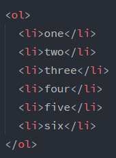
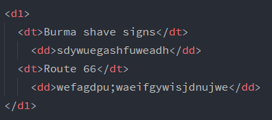

如果你需要在页面中引用一段别人的文字，可以用q元素或blockquote元素来达到，要注意的是，大多数浏览器会自动为q元素或
blockquote元素的内容两边加上双引号。如果你觉得q元素或blockquote元素只不过是代表了两个双引号就错了，这样做是为了
使页面更结构化，它代表了一个引用，在用q元素或blockquote元素标记之前，浏览器只知道那是一段文字。让浏览器知道它是一
个引用是有用的，例如搜索引擎如果要搜寻包含某引用的网页就要用到它。
q元素用于短引用，blockquote元素用于长引用。
现在只要知道，在页面中、增加结构和含义绝对是有意义的。
对于引用，有些浏览器会使用引号包围，有些使用斜体表示，还有些不加任何效果，要想确定它们如何显示，唯一的办法就是指定样
式，以后会讨论这个问题。
上边讲到q元素与blockquote元素，blockquote元素属于块元素，q元素属于内联元素，它们属于两类元素，它们的区别就是一个
自成一段而另一个可以嵌在一个段落里。因此，q元素也叫短引用，blockquote元素叫长引用。
有趣的是，q元素可以被嵌在blockquote元素中，比如你引用了某人的话，而这个人又引用了另外一个人的话。
每个块元素都单独显示，好像段前后都有换行，像h1、p、blockquote等都是块元素，它们用于构建页面的主要模块，所以设计页
面时，一般都从较大的块元素开始。
内联元素会显示在段落中，它们往往用来标记小段内容。
由于浏览器会忽略html文件中的回车符，因此就需要一个特别的元素来实现换行的功能，那就是br元素。它的使用方式与其它元素不一
样，只需要在要换行的地方插入一个即可，它没有匹配标记，这是一种简写，毕竟每次换行都写成<br></br>这样是没有意
义的,它没有内容。
br不是唯一没有实际内容的元素，还有一些这样的元素，例如img元素（表示图片），它们被叫做void元素。这样做不是因为懒惰，更
多的是为了提高效率，输入的字符少，相应的页面中的字符数也更少，这样html读起来也会更轻松。
void元素这个名字很怪，这个词来自于计算机科学，原意是:无值。
确切的说，void元素指HTML页面中在开始标记和结束标记之间没有任何内容的元素。
常用的列表分两类，有序列表ol元素和无序列表ul元素，它们都要用到列表项li元素。
只要将每个列表项用li元素包围（标记），再将整体用ol或ul元素包围即可，ol与ul的区别是ol会为每个列表项按照顺序自动创建编号
显示在每个列表项前而ul不会
这是例子:

为什么不用p元素来建列表呢？首先，我们总希望选择与内容结构含义最相近的元素，这是常识。并且，既然html专门提供了一个列表元
素，使用它可以使浏览器以最佳方式显示这个列表。比如你想插入一个新列表项，若是用p元素就得对所有列表项重新进行编号，这着
实不是一种方便高效的选择。
ol和ul都是块元素毋庸置疑，但要注意每个列表项之后也有换行，所以li元素也属于块元素。
还有，ol和ul元素被设计为只能包含li元素，所以不能将其它元素嵌入其中，但你可以对列表进行嵌套，比如在一个ul中嵌入一个ol列表
是可以的，只要将ol元素也用li元素标记即可。
其实还有第三类列表:定义列表dl。它的每一项都要用定义术语dt标记并用定义描述dd。
如下图所示:

值得注意的是，它所展现的效果就像文章分小标题介绍一样，所以可以用于这方面。